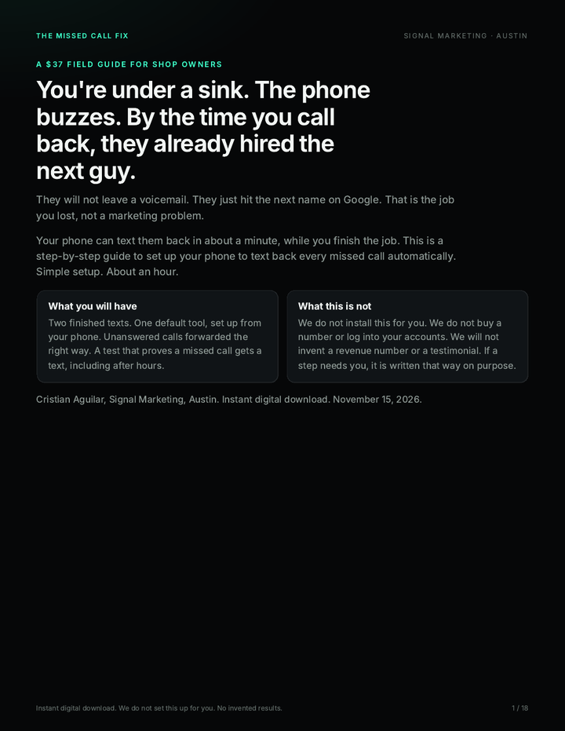
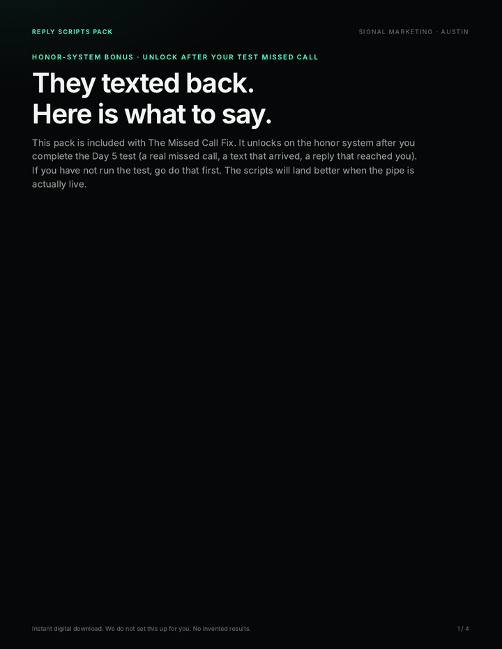
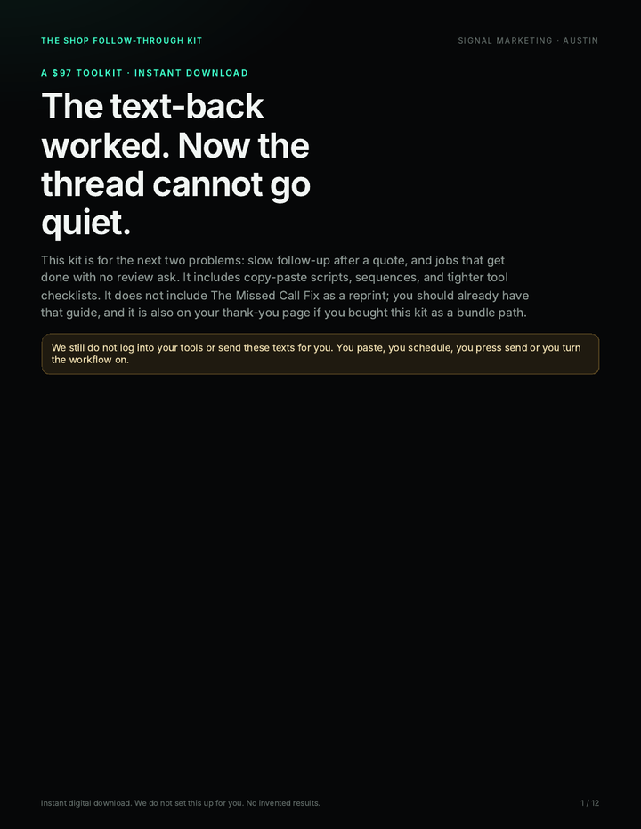
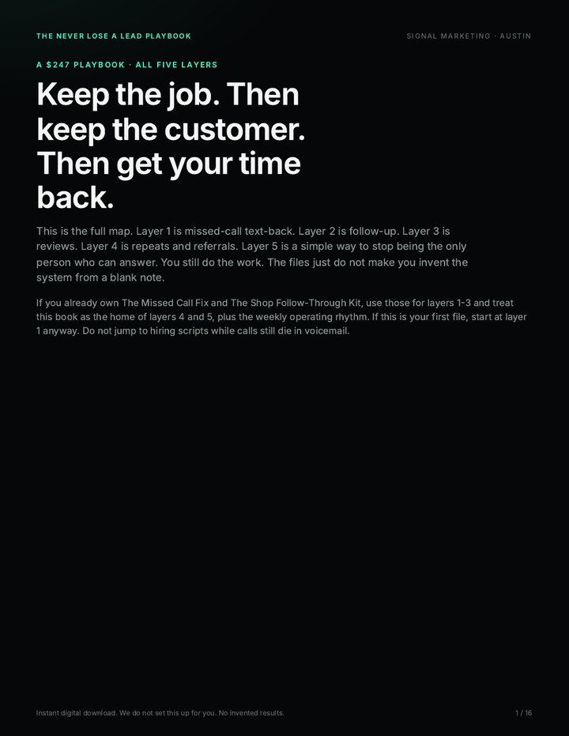

1
The call is missed
You're under a sink, on a roof, or in the van. The phone rings in your pocket. It does not get answered.
On the jobIncoming call. You cannot pick up. They will not leave a voicemail.
For 1 to 4 person Austin shops still on the tools
Can't step away from the job to answer a call? They will not leave a voicemail. They just hit the next name on Google. That is the job you lost, not a marketing problem.
Your phone can text them back in about a minute, while you finish the job, during the day and after hours. This $37 guide is a step-by-step setup to make every missed call get a text automatically. Simple setup. About an hour. You do it from your phone, with one default tool. You pay on this page. You get the files. Nobody gets on a call, and nobody installs it for you.
Instant download. No subscription required. No fake countdown. If your book is already full and you do not want the work, this is not for you.
How it works
Leads move fast. You cannot always pick up. That is the job. The leak is what happens in the next minute, during the day and after hours. This is the default path in the guide: one tool, plus forwarding on the phone you already have.
You're under a sink, on a roof, or in the van. The phone rings in your pocket. It does not get answered.
Your phone sends the message you wrote: who you are, what's going on, what's the address. You stay on the job.
The mid-size jobs, a water heater or a quote, often go to whoever texts back first. After hours, the same text says you'll call at 7am.
Sound familiar?
These are public comments from plumbing, HVAC, and small-business threads, cited in our November 2026 voice-of-customer research. They are not our customers, and they are not reviews of this guide.
"In plumbing the urgent ones usually don't leave a voicemail, they just call the next guy. Auto text back within a minute asking what's going on and the address bought us time even when we couldn't call for 20-30 min."
Public comment, r/Plumbing, 23 Sep 2026
"Where it costs money isn't the emergency calls, it's the mid-size jobs, a water heater replacement, a repipe estimate, that go to whoever answers or texts back first."
Public comment, r/Plumbing, 3 Sep 2026
"Tried Jobber, way too much for one person. You end up paying for features you'll never touch. The one thing worth paying for: something that catches missed calls and auto-texts the customer back."
Public comment, r/smallbusiness, 14 Feb 2026
"Two AI answering services I tried and both just emailed me the caller's name and number. That's voicemail with extra steps. I'm under a house for 3 hours at a time."
Public comment, r/Plumbing, 2026
Before and after
You still miss the call. The change is what the customer gets while you finish the job.
Questions you are already asking
"I was under the house. Did I just lose that job?"
If they did not leave a voicemail, you might have. In plumbing, the urgent ones usually just call the next guy. Mid-size jobs, like a water heater or a repipe estimate, often go to whoever texts back first.
"I already pay for Jobber or Housecall Pro. Why is this still happening?"
Those tools run the job once you have it. Missed-call text-back is often an add-on, or it is not turned on. Solo owners already say they pay for features they never touch. This guide uses a cheap number or the tool you already have, and makes the text actually fire.
"Should I just put an AI on the phone?"
Some shops like it. Some callers hang up the second they hear a robot. Some owners said the AI booked a messy calendar or only emailed a name and number, which is voicemail with extra steps. This guide uses a text, then a human. It does not pretend a robot is your office.
"Should I hire someone to answer first?"
If you already have three or four techs, you may already need a dispatcher. If you are still the person on the tools, a first hire is later. Fix the ring-to-text gap before you add payroll.
What's inside
These are the real covers, from the PDFs you download after you pay. For $37 you get the guide, the scripts, the 7-day plan, and the bonus pack below. We will not stamp a fake "$497 value" on it.



What you get in the $37 purchase:
Not included: we do not log into your accounts, buy a number, file 10DLC, or promise a revenue number. There is no timer on this page.
The leak, with sources
These are not our client results. We do not have published ones, and we will not invent them. If you are so booked that a missed call does not bother you, keep scrolling. This page is for the shop that is losing work it wanted.
Invoca reported that around 27% of home-services calls go unanswered, and fewer than 3% of callers pushed to voicemail leave a message (23 May 2024). Invoca sells call tracking. We cite the date.
Clockwork (10 Apr 2026) reported a 38% miss rate overall, and 52% for solo shops or shops with fewer than three employees. Clockwork sells in this category. We cite them as vendor research, not as our results.
A two-person electrical shop tracked eight weeks of after-hours calls and wrote up the log in public: 38% of their calls came after hours, most went to voicemail, and most of the people they reached later had already booked someone else. That is one shop, not a market rate.
The next problems, already mapped


You do not need the later rungs to finish this one. We do not hold back the missed-call steps to force an upsell. The $19/mo updates, if you want them later, are here.
FAQ
No. You pay, you land on a thank-you page, you download the files.
No. That is the point. The steps are laid out so you can do it from your phone, in about an hour. If you want someone to install it, this is not that product.
Yes, you can do the default setup from your phone. You will use your phone's web browser for one official step, because Quo turns on missed-call texts on the web, not in their phone app. The text that goes out is a message you write. Quo also has optional AI tools, including an agent that can answer calls. This guide does not start there. You write the text, then you call the person back.
Probably not. Some owners are fine letting the next shop take the overflow. This is for the shop that is losing jobs it wanted, especially the mid-size ones people shop around for in an afternoon.
If the file is broken or the download fails, email cristian.signalmarketing@gmail.com and I will make the download work. Because this is an instant digital product, read the stack above before you buy. We will not invent a 30-day money-back guarantee we have not yet put in writing in Stripe.
The checklist is free. The guide is the complete walkthrough. $37 sits in the usual $27 to $47 range for a core digital guide, and well below trade marketing courses we found listed at $99, $197, $199, and $499. We are not calling those "value equivalents." They are just the market around this topic.
I will not invent a refund badge to look like a big software company. If something is wrong with the file, or you want a straight answer before you buy, write cristian.signalmarketing@gmail.com. I read it.
$37 one time
Pay $37, get the files now